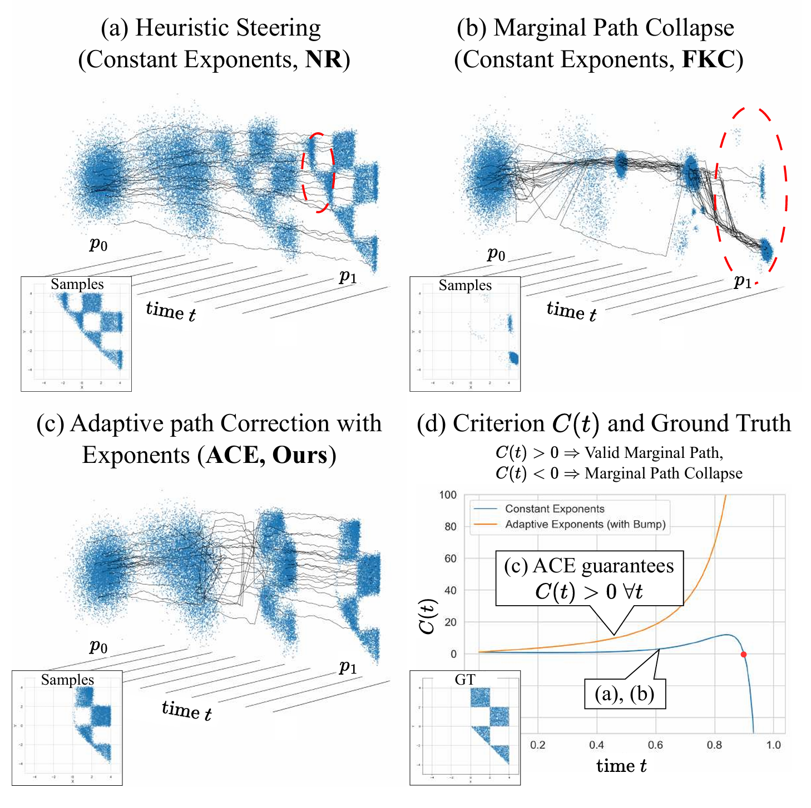
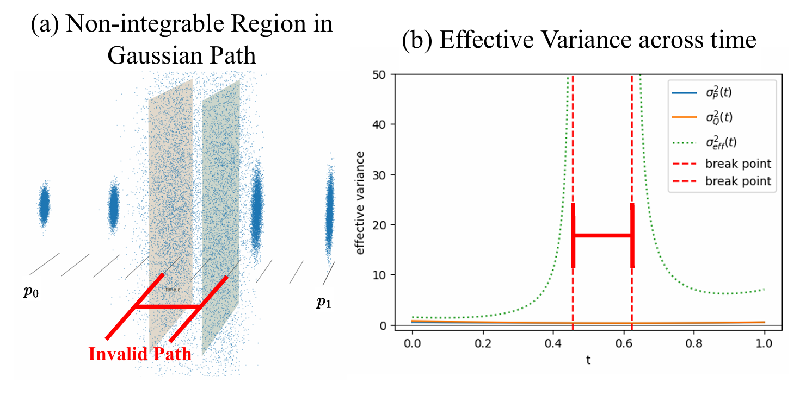
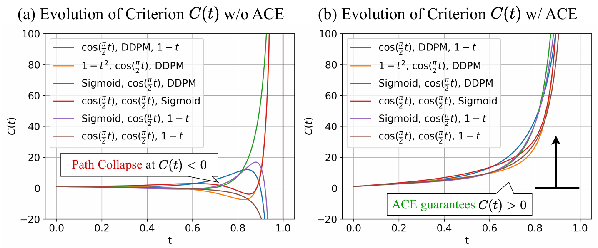
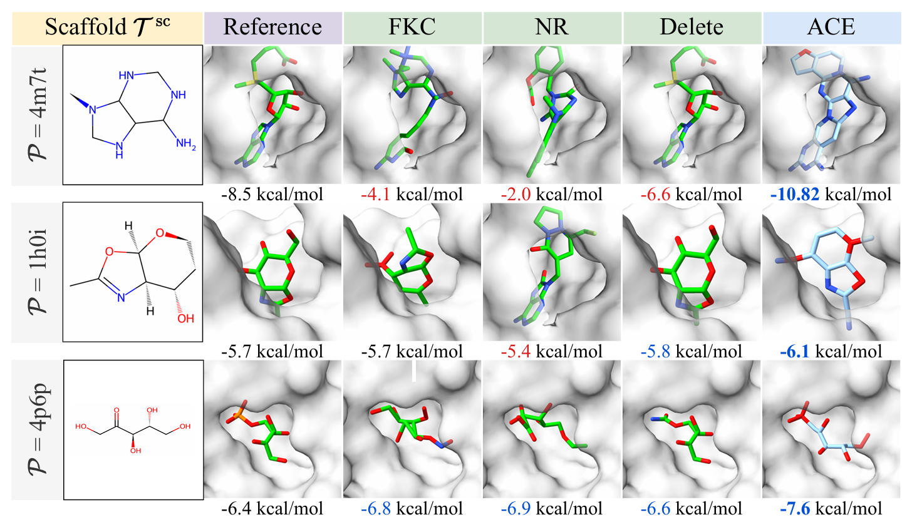
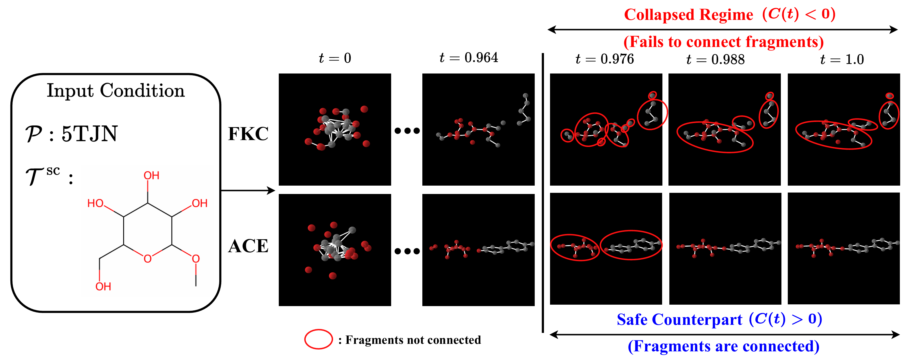
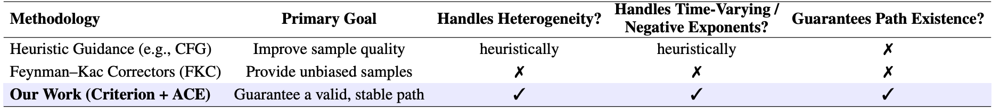
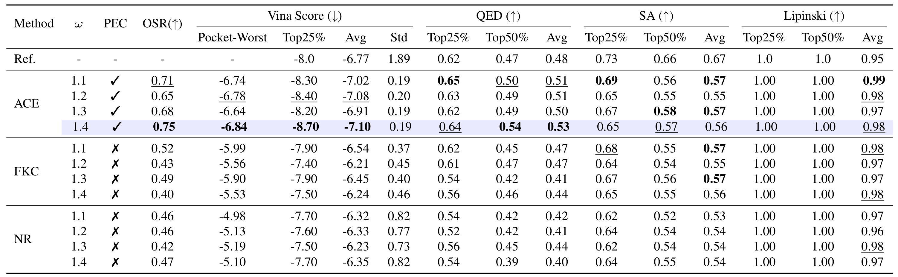
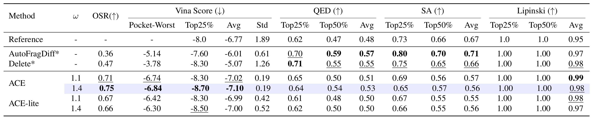
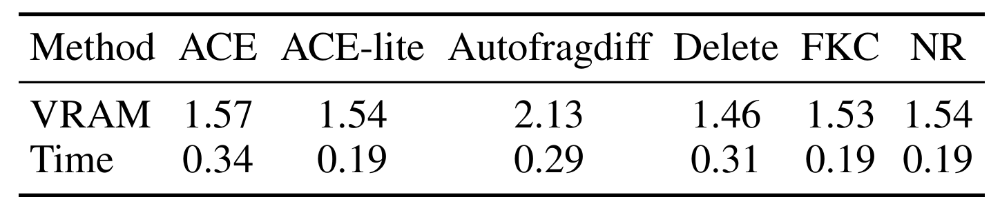
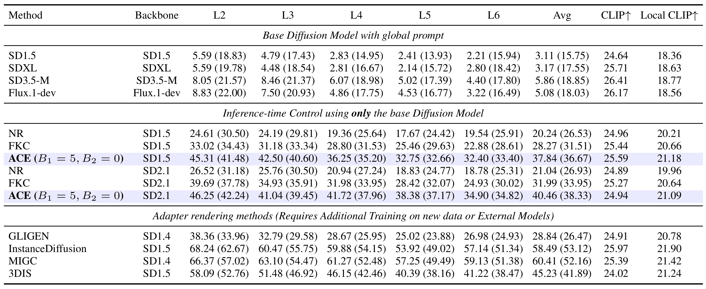

On the Collapse of Generative Paths:
A Criterion and Correction for Diffusion Steering
Abstract
Inference-time steering adapts pretrained diffusion and flow models to new tasks without retraining, often using ratio-of-densities constructions that reweight time-indexed marginals with fixed exponents. We identify Marginal Path Collapse, a failure mode in which the intermediate density defined by such compositions becomes non-normalizable despite valid endpoints. This collapse can arise when composing heterogeneous experts trained with mismatched noise schedules, negative exponents, or partial supports.
To address this, we provide a sharp sufficient Path Existence Criterion that certifies well-defined composed intermediate densities when \(C(t)>0\) and detects collapse when \(C(t)<0\), together with Adaptive Path Correction with Exponents (ACE). ACE generalizes Feynman–Kac steering to time-varying exponents and dynamically adjusts expert weights to keep the path valid. On flexible-pose scaffold decoration and compositional image generation, ACE prevents collapse and improves sample reliability over constant-exponent baselines.
What Problems Does ACE Solve?
ACE targets modular generation problems where a sample must satisfy several constraints at once. A simple template is a joint object \(X,Y\) with a local condition \(A\) on \(X\) and a joint condition \(B\) on \((X,Y)\). Under the conditional-independence structure used in the paper, Bayes' rule gives a ratio-of-densities target:
This decomposition lets us combine pretrained experts instead of retraining a monolithic model. ACE solves the missing piece: making the entire intermediate generative path valid when these experts have different schedules, supports, or exponent signs.
Synthetic Checker
Two coordinates \(X,Y\) are generated from heterogeneous marginal and joint experts.
This controlled setting exposes Marginal Path Collapse and tests the Path Existence Criterion.
Flexible-Pose Scaffold Decoration
Let \(X=M^{sc}\) be the scaffold and \(Y=M^R\) the R-groups. Topology acts locally, while protein-pocket binding acts globally.
ACE composes CONF, SBDD, and DN experts while repairing schedule-induced collapse.
Multi-Instance Image Generation
Region prompts \(c_i\) constrain local foregrounds \(F_i\), while a global prompt \(C\) constrains the full image.
Here the path is homogeneous and valid, but ACE still improves concentration and prompt alignment.
Understanding ACE
ACE detects invalid composed paths with the Path Existence Criterion and corrects exponent schedules so that \(C_k(t)>0\) on the sampling timesteps.
Marginal Path Collapse & ACE Correction

Figure 1: Marginal Path Collapse breaks heterogeneous composition. In a 2D checkerboard built from two 1D priors and a 2D constraint, standard steering is biased and FKC fails when the path-existence criterion becomes negative. ACE dynamically adjusts exponents to ensure \(C(t)>0\), recovering the target path.
Understanding Path Collapse

Figure 2: Non-integrable region in the ratio-of-Gaussians example. The path is well-defined at the endpoints, but the intermediate variance explodes, causing Marginal Path Collapse. The sampler may still run numerically, but it no longer follows the intended probability path.
Schedule Mismatch and Criterion Repair

Figure 3: Common noise schedules and Marginal Path Collapse. Many heterogeneous three-expert compositions enter a region where \(C(t)<0\), implying non-normalizable intermediate densities. The corrected exponents of ACE ensure \(C(t)>0\) for all sampled times.
Applications of ACE
One ratio-of-densities framework, multiple domains — from drug discovery to multi-instance image generation
Flexible-Pose Scaffold Decoration
Drug Discovery
Figure 6: ACE enables high-guidance steering for flexible-pose scaffold decoration. ACE generates highly dockable molecules by accurately modeling the ratio-of-density path, whereas FKC and NR produce suboptimal results due to ill-defined probability paths. The flexible-pose formulation relaxes the fixed-pose constraint of Delete and explores a larger search space.
Impact of Path Collapse on Molecules
Drug Discovery
Figure E.9: Impact of Marginal Path Collapse on molecular generation. On scaffold decoration at \(\omega=1.3\), FKC enters a collapsed regime near the end of sampling where \(C(t)<0\), producing disjoint fragments. ACE applies the bump correction to keep \(C(t)>0\) throughout the trajectory and produces connected, chemically valid molecules.
"A photo of a red chair and a yellow chair and a white teddy bear and a brown dining table"
Figure E.18: Qualitative results of compositional image generation with ACE. Compared to the base Stable Diffusion 2.1 model (left), simulating the same model with ACE (right) yields better prompt alignment and layout guidance without additional training or external models. Table E.16 quantifies the improvement on COCO-MIG.
Key Contributions
Diagnosis: Path Existence Criterion
We derive an easy-to-compute criterion that certifies path existence when \(C_k(t)>0\) and detects collapse when \(C_k(t)<0\), using only schedules and exponents.
Positive criterion certifies a valid path; negative criterion detects collapse.
Solution: ACE Framework
Building on this diagnosis, ACE extends Feynman–Kac steering to support time-varying exponents, dynamically adjusting expert weights throughout generation while preserving the final target distribution.
Endpoint-preserving "bump" correction \(b_i(t)\) keeps the path-existence criterion positive (\(b_i(0)=b_i(t_{\mathrm{end}})=0\)). In the paper, we prove such corrections can always be constructed and empirically instantiate them with linear and quadratic bump components, selecting \(B_1,B_2\) to satisfy the criterion during sampling.
Method Comparison

Table 1: Comparison of steering methodologies. Unlike heuristics or standard correctors, which assume homogeneity or do not verify path existence, ACE provides an explicit criterion and adaptive correction for path validity under heterogeneous conditions.
Quantitative Results

Table 3: Performance comparison on CrossDocked, evaluating docking affinity (Vina Score) and drug-likeness (QED, SA, and Lipinski). Higher is better for OSR and drug-likeness; lower, more negative Vina scores are preferred. NR and FKC suffer from path-existence-criterion violations, while ACE remains valid across the tested configurations.

Table 4: Comparison against fixed-pose scaffold-decoration baselines on CrossDocked, evaluating docking affinity and drug-likeness. Higher is better for OSR and drug-likeness; lower, more negative Vina scores are preferred. Asterisks denote methods that require a reference ligand pose.

Table 5: Computational cost reported in terms of VRAM usage (GB) and runtime (min/molecule). ACE-lite significantly reduces the runtime overhead while maintaining performance, showing that the path-validity correction can be deployed efficiently alongside task-specific baselines.

Table E.16: Instance attribute success ratio (%) on COCO-MIG, with the corresponding mIoU (%) shown in parentheses. L2–L6 denote tasks with 2 to 6 region-wise guidance conditions. CLIP is computed on the full image and prompt, while Local CLIP is computed on local crops and their corresponding local prompts.
BibTeX
@inproceedings{
lee2026collapse,
title={On the Collapse of Generative Paths: A Criterion and Correction for Diffusion Steering},
author={Ziseok Lee and Minyeong Hwang and Wooyeol Lee and Sanghyun Jo and Jihyung Ko and Young Bin Park and Jae-Mun Choi and Eunho Yang and Kyungsu Kim},
booktitle={Proceedings of the 43rd International Conference on Machine Learning},
year={2026},
url={https://openreview.net/forum?id=emv2qsi3TG}
}